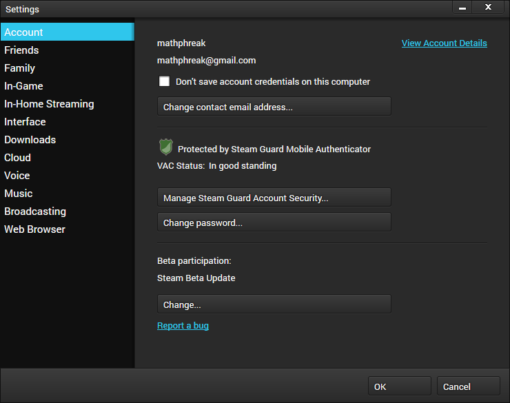
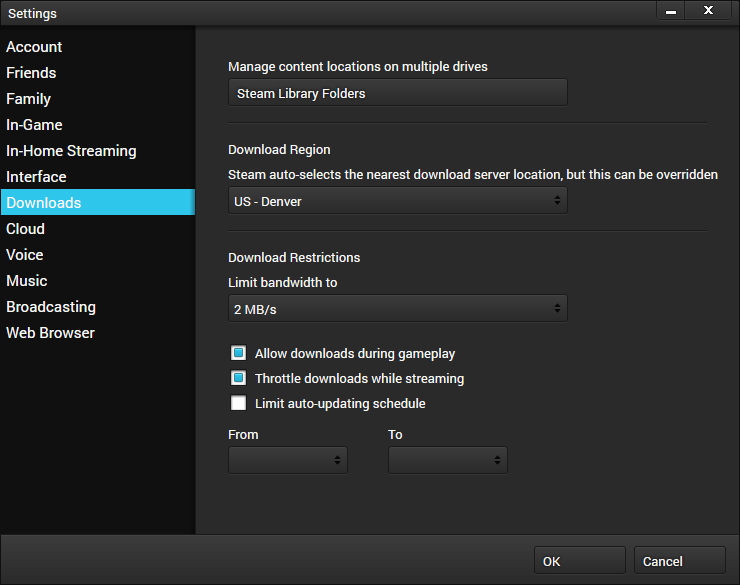
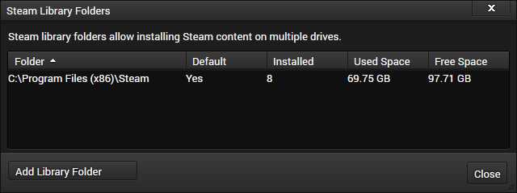
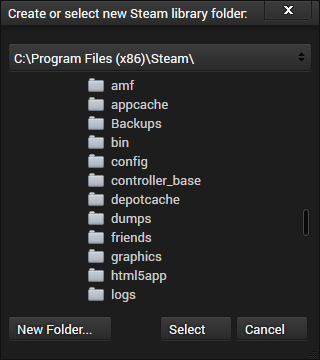
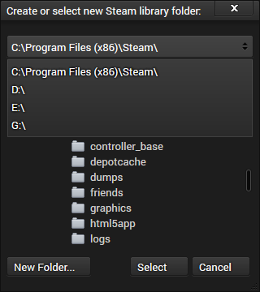
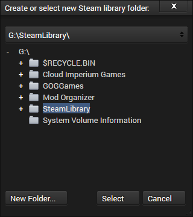
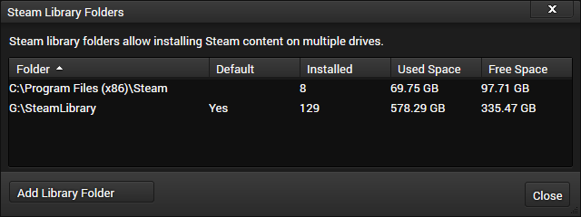

Configuring Libraries in Steam
Switching from an older tool to Relief Valve? Read the migration guide instead.
Instructions
-

Open Steam settings.
-

Switch to the Downloads section.
-

Click the Steam Library Folders button.
-

Click the Add Library Folder button.
-

Select the proper drive.
-

Find the desired folder. If you don't already have a clean folder, you'll need to make a new one.
-

Click the Select button.